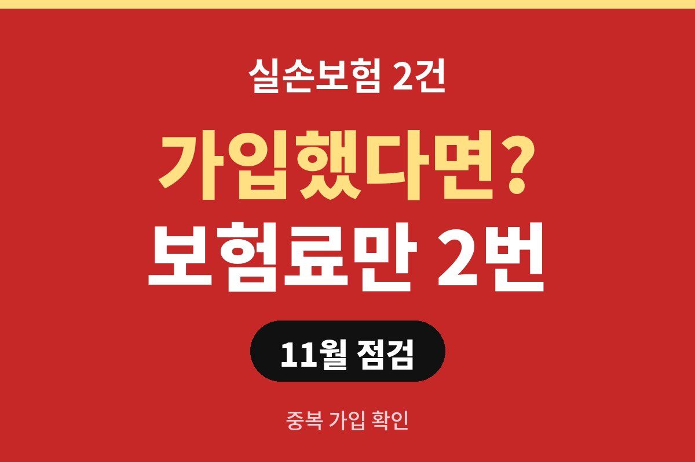
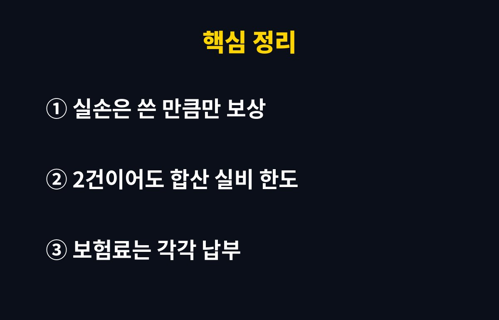
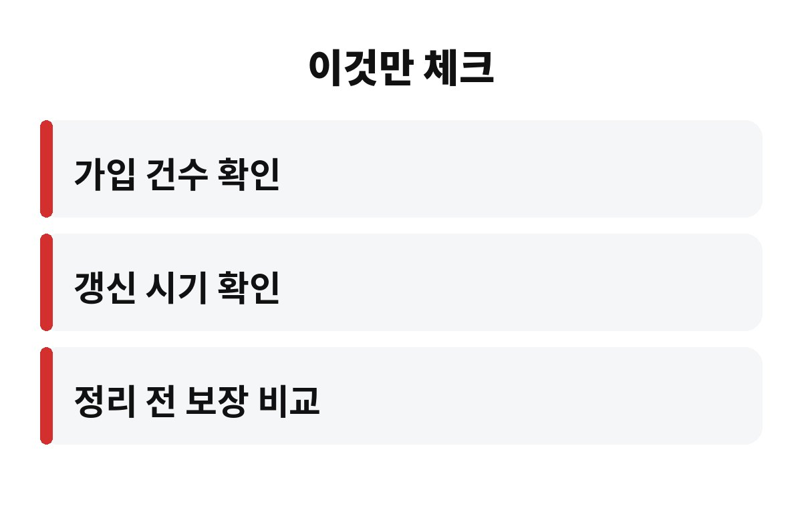

실손보험 중복 가입은 2건이어도 병원비를 2배로 받는 구조가 아닙니다. 실제로 쓴 의료비 안에서만 나눠 받기 때문에 보험료만 이중으로 나갈 수 있어요.
혹시 회사 단체보험과 개인 실손이 함께 있는 직장인이라면, 지금 내 보험이 몇 건인지 알고 계신가요?
결론부터 말하면 아니에요. 실손보험은 이름 그대로 실제 손해만큼 돌려주는 보험이거든요. 병원비로 10만 원을 썼다면, 보험이 몇 개든 합쳐서 그 범위 안에서만 지급됩니다.
예를 들어 두 곳에 가입돼 있으면 보험사끼리 가입 조건에 따라 비율을 나눠서 지급해요. 한 곳에서 다 받고, 다른 곳에서 또 받는 식의 이중 수령은 안 됩니다. 그래서 중복 가입의 가장 큰 단점은 이득 없이 보험료만 두 번 내는 거예요.
그래서 실손보험 중복 가입 여부는 연말에 한 번쯤 점검할 만한 항목이에요. 은근히 모르고 지나가는 분이 많거든요.
일부러 두 개를 든 게 아닌데 중복이 되는 경우가 꽤 있어요. 대표적으로 이런 상황입니다.
| 상황 | 왜 중복될까 |
| 회사 단체보험 | 복지로 실손이 들어 있는데 개인 실손도 그대로 유지 |
| 자녀·가족 보험 | 부모가 따로 들어준 보험과 본인 가입이 겹침 |
| 설계사 권유 | 새 상품으로 갈아타며 기존 것을 해지하지 않음 |
특히 이직을 자주 하셨다면 예전 회사 단체보험이 아직 살아 있는 경우도 있어요. 보험증권이나 보험사 앱에서 가입 목록을 한 번만 확인해도 금방 알 수 있습니다.

여기서 서두르면 후회할 수 있어요. 오래된 실손은 보장 범위가 넓은 경우가 많고, 한 번 해지하면 같은 조건으로 다시 들기가 어렵거든요. 그러니까 해지부터 누르지 말고 두 보험의 보장 내용을 먼저 비교해 보세요.
비교할 때는 자기부담금 비율, 보장 한도, 갱신 주기, 보험료 인상 폭을 보시면 됩니다. 보장이 좋은 쪽을 남기고 나머지를 정리하는 게 보통의 순서예요.
다만 단체보험은 퇴사하면 자동으로 끝나는 경우가 있어서, 개인 실손을 급하게 정리했다가 보장 공백이 생기면 곤란해요. 회사 보험의 유지 조건도 꼭 확인해 두세요.
마지막으로 체크할 순서를 짧게 알려드릴게요. 첫째, 보험사 앱이나 통합 조회 서비스로 가입 건수를 확인합니다. 둘째, 각 보험의 보장 내용과 갱신 시기를 비교합니다. 셋째, 보험사 상담원에게 해지했을 때 다시 가입이 가능한지, 중단 제도가 있는지 물어보세요.
해지 말고 잠시 멈춰두는 제도가 있는 상품도 있으니, 상담받을 때 이 부분을 꼭 물어보면 좋아요. 보험은 아끼려다 오히려 큰 병원비를 맞을 수 있는 영역이라 신중해야 합니다.
중복을 정리하면 매달 나가는 실손보험료 한 건이 통째로 사라지니 고정비 부담이 눈에 띄게 줄어요. 실손보험은 나이가 들수록 갱신 때마다 보험료가 오르는 구조라서, 필요 없는 한 건을 오래 들고 있을수록 누적 손해가 커집니다.
가계부를 쓰는 분이라면 보험 항목에서 같은 이름의 결제가 두 줄 찍혀 있는지 먼저 보세요. 자동이체 내역에 비슷한 금액이 두 번 빠져나가고 있다면 중복 가입을 의심해 볼 만합니다. 작은 금액처럼 보여도 몇 년이 쌓이면 꽤 큰 돈이 돼요.
또 하나, 실손은 청구 과정에서 보험사가 중복 여부를 확인하기 때문에 숨길 수도 없고 숨길 필요도 없어요. 정직하게 한 건으로 정리해 두는 편이 마음도 편하고 지출도 깔끔합니다. 연말이 가기 전에 꼭 한 번 점검해 보세요.

오늘 한 번만 내 보험 목록을 열어보세요. 생각보다 같은 보장을 두 번 사고 있는 분이 많습니다. 혹시 여러분은 지금 실손보험이 몇 건인지 정확히 알고 계세요? 댓글로 남겨주시고, 도움이 되셨다면 구독도 부탁드려요.
※ 본 글은 일반적인 정보 제공이며 투자·가입 권유가 아닙니다. 상품별 조건은 보험사와 확인하세요.